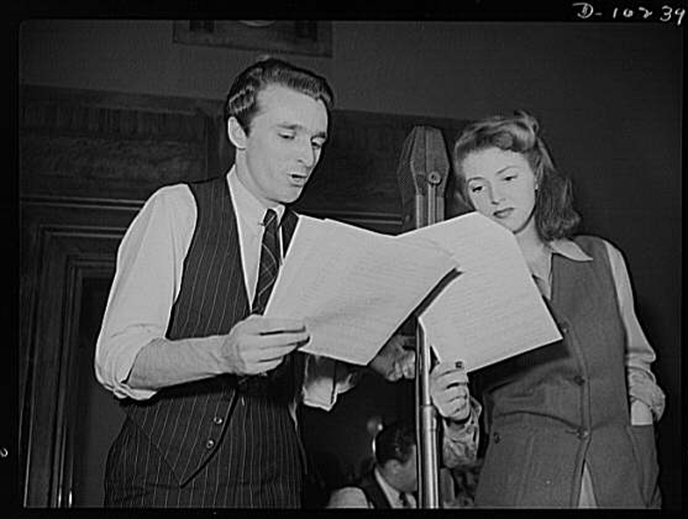
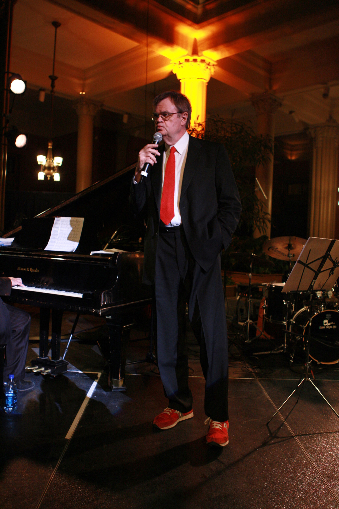

Figure 7.1
In 1983, radio station WOXY’s new owners bought the station and changed its format from Top 40 to the up-and-coming alternative rock format, kicking off with U2’s “Sunday Bloody Sunday.”WOXY, “The History of WOXY,” 2009, http://woxy.com/about/. Then located in the basement of a fast-food restaurant in Ohio, the station was a risk for its purchasers, a husband and wife team who took a chance by changing the format to a relatively new one. Their investment paid off with the success of their station. By 1990, WOXY had grown in prestige to become one of Rolling Stone magazine’s top 15 radio stations in the country and had even been made famous by a reference in the 1988 film Rain Man.Lauren Bishop, “97X Farewell,” Cincinnati Enquirer, May 10, 2004, http://www.enquirer.com/editions/2004/05/10/tem_tem1a.html. In 1998, the station launched a web cast and developed a national following, ranking 12th among Internet broadcasters for listenership in 2004.Lauren Bishop, “97X Farewell,” Cincinnati Enquirer, May 10, 2004, http://www.enquirer.com/editions/2004/05/10/tem_tem1a.html.
When the station’s owners decided to retire and sell the frequency allocation in 2004, they hoped to find investors to continue the online streaming version of the station. After several months of unsuccessful searching, however, the station went off the air entirely—only to find a last-minute investor willing to fund an Internet version of the station.WOXY, “The History of WOXY,” 2009, http://woxy.com/about/.
The online version of the station struggled to make ends meet until it was purchased by the online music firm Lala.Jacqui Cheng, “Bad Luck, Funding Issues Shutter Indie Station WOXY.com,” Ars Technica (blog), March 23, 2010, http://arstechnica.com/media/news/2010/03/bad-luck-funding-issues-shutter-indie-station-woxycom.ars. The now-defunct Lala sold WOXY to music company Future Sounds Inc., which moved the station and staff from Ohio to Austin, Texas. In March 2010, citing “current economic realities and the lack of ongoing funding,” WOXY.com went off the air with only a day’s notice.Jacqui Cheng, “Bad Luck, Funding Issues Shutter Indie Station WOXY.com,” Ars Technica (blog), March 23, 2010, http://arstechnica.com/media/news/2010/03/bad-luck-funding-issues-shutter-indie-station-woxycom.ars.
Taken in the context of the modern Internet revolution and the subsequent faltering of institutions such as newspapers and book publishers, the rise and fall of WOXY may seem to bode ill for the general fate of radio. However, taken in the larger context of radio’s history, this story of the Internet’s effect on radio could prove to be merely another leap in a long line of radio revolutions. From the shutting down of all broadcasts during World War I to the eclipse of radio by television during the 1950s, many arbiters of culture and business have prophesized the demise of radio for decades. Yet this chapter will show how the inherent flexibility and intimacy of the medium has allowed it to adapt to new market trends and to continue to have relevance as a form of mass communication.
At its most basic level, radioCommunication through the use of radio waves. is communication through the use of radio waves. This includes radio used for person-to-person communication as well as radio used for mass communication. Both of these functions are still practiced today. Although most people associate the term radio with radio stations that broadcast to the general public, radio wave technology is used in everything from television to cell phones, making it a primary conduit for person-to-person communication.
Guglielmo Marconi is often credited as the inventor of radio. As a young man living in Italy, Marconi read a biography of Hienrich Hertz, who had written and experimented with early forms of wireless transmission. Marconi then duplicated Hertz’s experiments in his own home, successfully sending transmissions from one side of his attic to the other.“Guglielmo Marconi,” American Experience: People & Events, http://www.pbs.org/wgbh/amex/rescue/peopleevents/pandeAMEX98.html. He saw the potential for the technology and approached the Italian government for support. When the government showed no interest in his ideas, Marconi moved to England and took out a patent on his device. Rather than inventing radio from scratch, however, Marconi essentially combined the ideas and experiments of other people to make them into a useful communications tool. Lewis Coe, Wireless Radio: A Brief History (Jefferson, NC: MacFarland, 1996), 4–10.
Figure 7.2

Guglielmo Marconi developed an early version of the wireless radio.
In fact, long-distance electronic communication has existed since the middle of the 19th century. The telegraphEarly communication technology that used wires to transmit messages through a series of clicks. communicated messages through a series of long and short clicks. Cables across the Atlantic Ocean connected even the far-distant United States and England using this technology. By the 1870s, telegraph technology had been used to develop the telephone, which could transmit an individual’s voice over the same cables used by its predecessor.
When Marconi popularized wireless technology, contemporaries initially viewed it as a way to allow the telegraph to function in places that could not be connected by cables. Early radios acted as devices for naval ships to communicate with other ships and with land stations; the focus was on person-to-person communication. However, the potential for broadcasting—sending messages to a large group of potential listeners—wasn’t realized until later in the development of the medium.
The technology needed to build a radio transmitter and receiver was relatively simple, and the knowledge to build such devices soon reached the public. Amateur radio operators quickly crowded the airwaves, broadcasting messages to anyone within range and, by 1912, incurred government regulatory measures that required licenses and limited broadcast ranges for radio operation.Thomas White, “Pioneering Amateurs (1900–1917),” United States Early Radio History, http://earlyradiohistory.us/sec012.htm. This regulation also gave the president the power to shut down all stations, a power notably exercised in 1917 upon the United States’ entry into World War I to keep amateur radio operators from interfering with military use of radio waves for the duration of the war.Thomas White, “Pioneering Amateurs (1900–1917),” United States Early Radio History, http://earlyradiohistory.us/sec012.htm.
Wireless technology made radio as it is known today possible, but its modern, practical function as a mass communication medium had been the domain of other technologies for some time. As early as the 1880s, people relied on telephones to transmit news, music, church sermons, and weather reports. In Budapest, Hungary, for example, a subscription service allowed individuals to listen to news reports and fictional stories on their telephones.White, “News and Entertainment by Telephone (1876–1925),” United States Early Radio History, http://earlyradiohistory.us/sec003.htm. Around this time, telephones also transmitted opera performances from Paris to London. In 1909, this innovation emerged in the United States as a pay-per-play phonograph service in Wilmington, Delaware.White, “News and Entertainment by Telephone (1876–1925),” United States Early Radio History, http://earlyradiohistory.us/sec003.htm. This service allowed subscribers to listen to specific music recordings on their telephones.White, “News and Entertainment by Telephone (1876–1925),” United States Early Radio History, http://earlyradiohistory.us/sec003.htm.
In 1906, Massachusetts resident Reginald Fessenden initiated the first radio transmission of the human voice, but his efforts did not develop into a useful application.John Grant, Experiments and Results in Wireless Telegraphy (reprinted from The American Telephone Journal, 49–51, January 26, 1907), http://earlyradiohistory.us/1907fes.htm. Ten years later, Lee de Forest used radio in a more modern sense when he set up an experimental radio station, 2XG, in New York City. De Forest gave nightly broadcasts of music and news until World War I halted all transmissions for private citizens.White, “Pre-War Vacuum Tube Transmitter Development 1914–1917),” United States Early Radio History, http://earlyradiohistory.us/sec011.htm.
After the World War I radio ban lifted with the close of the conflict in 1919, a number of small stations began operating using technologies that had developed during the war. Many of these stations developed regular programming that included religious sermons, sports, and news.White, “Broadcasting After World War I (1919–1921),” United States Early Radio History, http://earlyradiohistory.us/sec016.htm. As early as 1922, Schenectady, New York’s WGY broadcast over 40 original dramas, showing radio’s potential as a medium for drama. The WGY players created their own scripts and performed them live on air. This same groundbreaking group also made the first known attempt at television drama in 1928.Elizabeth McLeod, “The WGY Players and the Birth of Radio Drama,” 1998, http://www.midcoast.com/~lizmcl/wgy.html.
Businesses such as department stores, which often had their own stations, first put radio’s commercial applications to use. However, these stations did not advertise in a way that the modern radio listener would recognize. Early radio advertisements consisted only of a “genteel sales message broadcast during ‘business’ (daytime) hours, with no hard sell or mention of price.”Christopher Sterling and John Kittross, Stay Tuned: A History of American Broadcasting, 3rd ed. (New York: Routledge, 2002), 124. In fact, radio advertising was originally considered an unprecedented invasion of privacy, because—unlike newspapers, which were bought at a newsstand—radios were present in the home and spoke with a voice in the presence of the whole family.Christopher Sterling and John Kittross, Stay Tuned: A History of American Broadcasting, 3rd ed. (New York: Routledge, 2002), 124. However, the social impact of radio was such that within a few years advertising was readily accepted on radio programs. Advertising agencies even began producing their own radio programs named after their products. At first, ads ran only during the day, but as economic pressure mounted during the Great Depression in the 1930s, local stations began looking for new sources of revenue, and advertising became a normal part of the radio soundscape.Christopher Sterling and John Kittross, Stay Tuned: A History of American Broadcasting, 3rd ed. (New York: Routledge, 2002), 124.
Not long after radio’s broadcast debut, large businesses saw its potential profitability and formed networksOriginally groups of radio stations that shared the same programming, these became large broadcasting corporations in control of radio programming.. In 1926, RCA started the National Broadcasting Network (NBC). Groups of stations that carried syndicated network programs along with a variety of local shows soon formed its Red and Blue networks. Two years after the creation of NBC, the United Independent Broadcasters became the Columbia Broadcasting System (CBS) and began competing with the existing Red and Blue networks.Christopher Sterling and John Kittross, Stay Tuned: A History of American Broadcasting, 3rd ed. (New York: Routledge, 2002), 117–119.
Although early network programming focused mainly on music, it soon developed to include other programs. Among these early innovations was the variety showA radio program genre that generally revolved around a host and cast that participated in sketch-comedy and musical numbers.. This format generally featured several different performers introduced by a host who segued between acts. Variety shows included styles as diverse as jazz and early country music. At night, dramas and comedies such as Amos ’n’ Andy, The Lone Ranger, and Fibber McGee and Molly filled the airwaves. News, educational programs, and other types of talk programs also rose to prominence during the 1930s.Christopher Sterling and John Kittross, Stay Tuned: A History of American Broadcasting, 3rd ed. (New York: Routledge, 2002), 128–138.
In the mid-1920s, profit-seeking companies such as department stores and newspapers owned a majority of the nation’s broadcast radio stations, which promoted their owners’ businesses.“Radio’s Emergence,” Oracle ThinkQuest: The 1920s, http://library.thinkquest.org/27629/themes/media/md20s.html. Nonprofit groups such as churches and schools operated another third of the stations. As the number of radio stations outgrew the available frequencies, interference became problematic, and the government stepped into the fray.
The Radio Act of 1927 established the Federal Radio Commission (FRC) to oversee regulation of the airwaves. A year after its creation, the FRC reallocated station bandwidths to correct interference problems. The organization reserved 40 high-powered channels, setting aside 37 of these for network affiliates. The remaining 600 lower-powered bandwidths went to stations that had to share the frequencies; this meant that as one station went off the air at a designated time, another one began broadcasting in its place. The Radio Act of 1927 allowed major networks such as CBS and NBC to gain a 70 percent share of U.S. broadcasting by the early 1930s, earning them $72 million in profits by 1934.Robert W. McChesney, “Media and Democracy: The Emergence of Commercial Broadcasting in the United States, 1927–1935,” in “Communication in History: The Key to Understanding,” OAH Magazine of History 6, no. 4 (1992). At the same time, nonprofit broadcasting fell to only 2 percent of the market.Robert W. McChesney, “Media and Democracy: The Emergence of Commercial Broadcasting in the United States, 1927–1935,” in “Communication in History: The Key to Understanding,” OAH Magazine of History 6, no. 4 (1992).
In protest of the favor that the 1927 Radio Act showed toward commercial broadcasting, struggling nonprofit radio broadcasters created the National Committee on Education by Radio to lobby for more outlets. Basing their argument on the notion that the airwaves—unlike newspapers—were a public resource, they asserted that groups working for the public good should take precedence over commercial interests. Nevertheless, the Communications Act of 1934 passed without addressing these issues, and radio continued as a mainly commercial enterprise.Robert W. McChesney, “Media and Democracy: The Emergence of Commercial Broadcasting in the United States, 1927–1935,” in “Communication in History: The Key to Understanding,” OAH Magazine of History 6, no. 4 (1992).
The so-called Golden Age of Radio occurred between 1930 and the mid-1950s. Because many associate the 1930s with the struggles of the Great Depression, it may seem contradictory that such a fruitful cultural occurrence arose during this decade. However, radio lent itself to the era. After the initial purchase of a receiver, radio was free and so provided an inexpensive source of entertainment that replaced other, more costly pastimes, such as going to the movies.
Radio also presented an easily accessible form of media that existed on its own schedule. Unlike reading newspapers or books, tuning in to a favorite program at a certain time became a part of listeners’ daily routine because it effectively forced them to plan their lives around the dial.
During the Great Depression, radio became so successful that another network, the Mutual Broadcasting Network, began in 1934 to compete with NBC’s Red and Blue networks and the CBS network, creating a total of four national networks.Sean Cashman, America in the Twenties and Thirties: The Olympian Age of Franklin Delano Roosevelt (New York: New York University Press, 1989), 328. As the networks became more adept at generating profits, their broadcast selections began to take on a format that later evolved into modern television programming. Serial dramas and programs that focused on domestic work aired during the day when many women were at home. Advertisers targeted this demographic with commercials for domestic needs such as soap.“Soap Opera,” The Museum of Broadcast Communications, http://www.museum.tv/eotvsection.php?entrycode=soapopera. Because they were often sponsored by soap companies, daytime serial dramas soon became known as soap operas. Some modern televised soap operas, such as Guiding Light, which ended in 2009, actually began in the 1930s as radio serials.Michele Hilmes, Radio Voices: American Broadcasting 1922–1952 (Minneapolis: University of Minnesota Press, 1999), 157.
During the evening, many families listened to the radio together, much as modern families may gather for television’s prime time. Popular evening comedy variety shows such as George Burns and Gracie Allen’s Burns and Allen, the Jack Benny Show, and the Bob Hope Show all began during the 1930s. These shows featured a central host—for whom the show was often named—and a series of sketch comedies, interviews, and musical performances, not unlike contemporary programs such as Saturday Night Live. Performed lived before a studio audience, the programs thrived on a certain flair and spontaneity. Later in the evening, so-called prestige dramas such as Lux Radio Theater and Mercury Theatre on the Air aired. These shows featured major Hollywood actors recreating movies or acting out adaptations of literature.Michele Hilmes, Radio Voices: American Broadcasting 1922–1952 (Minneapolis: University of Minnesota Press, 1999), 183–185.
Figure 7.3
Many prime-time radio broadcasts featured film stars recreating famous films over the air.
By the late 1930s, the popularity of radio news broadcasts had surpassed that of newspapers. Radio’s ability to emotionally draw its audiences in close to events made for news that evoked stronger responses and, thus, greater interest than print news could. For example, the infant son of famed aviator Charles Lindbergh was kidnapped and murdered in 1932. Radio networks set up mobile stations that covered events as they unfolded, broadcasting nonstop for several days and keeping listeners updated on every detail while tying them emotionally to the outcome.Robert Brown, Manipulating the Ether: The Power of Broadcast Radio in Thirties America (Jefferson, NC: MacFarland, 1998), 134–137.
As recording technology advanced, reporters gained the ability to record events in the field and bring them back to the studio to broadcast over the airwaves. One early example of this was Herb Morrison’s recording of the Hindenburg disaster. In 1937, the Hindenburg blimp exploded into flames while attempting to land, killing 37 of its passengers. Morrison was already on the scene to record the descent, capturing the fateful crash. The entire event was later broadcast, including the sound of the exploding blimp, providing listeners with an unprecedented emotional connection to a national disaster. Morrison’s exclamation “Oh, the humanity!” became a common phrase of despair after the event.Robert Brown, Manipulating the Ether: The Power of Broadcast Radio in Thirties America (Jefferson, NC: MacFarland, 1998), 141–142.
Radio news became even more important during World War II, when programs such as Norman Corwin’s This Is War! sought to bring more sober news stories to a radio dial dominated by entertainment. The program dealt with the realities of war in a somber manner; at the beginning of the program, the host declared, “No one is invited to sit down and take it easy. Later, later, there’s a war on.”Gerd Horten, Radio Goes to War: The Cultural Politics of Propaganda During World War II (Los Angeles: University of California Press, 2002), 48–52. In 1940, Edward R. Murrow, a journalist working in England at the time, broadcast firsthand accounts of the German bombing of London, giving Americans a sense of the trauma and terror that the English were experiencing at the outset of the war.Gerd Horten, Radio Goes to War: The Cultural Politics of Propaganda During World War II (Los Angeles: University of California Press, 2002), 36. Radio news outlets were the first to broadcast the attack on Pearl Harbor that propelled the United States into World War II in 1941. By 1945, radio news had become so efficient and pervasive that when Roosevelt died, only his wife, his children, and Vice President Harry S. Truman were aware of it before the news was broadcast over the public airwaves.Robert Brown, Manipulating the Ether: The Power of Broadcast Radio in Thirties America (Jefferson, NC: MacFarland, 1998), 123.
The Communications Act of 1934 created the Federal Communications CommissionFederal commission charged with regulating the communications industries. (FCC) and ushered in a new era of government regulation. The organization quickly began enacting influential radio decisions. Among these was the 1938 decision to limit stations to 50,000 watts of broadcasting power, a ceiling that remains in effect today.Sean Cashman, America in the Twenties and Thirties: The Olympian Age of Franklin Delano Roosevelt (New York: New York University Press, 1989), 327. As a result of FCC antimonopoly rulings, RCA was forced to sell its NBC Blue network; this spun-off division became the American Broadcasting Corporation (ABC) in 1943.Susan Brinson, The Red Scare, Politics, and the Federal Communications Commission, 1941–1960 (Westport, CT: Praeger, 2004), 42.
Another significant regulation with long-lasting influence was the Fairness DoctrineA 1949 FCC ruling that required station owners to allocate equal time to opposing points of view.. In 1949, the FCC established the Fairness Doctrine as a rule stating that if broadcasters editorialized in favor of a position on a particular issue, they had to give equal time to all other reasonable positions on that issue.Ray Browne and Glenn Browne, Laws of Our Fathers: Popular Culture and the U.S. Constitution (Bowling Green, OH: Bowling Green State University Popular Press, 1986), 132. This tenet came from the long-held notion that the airwaves were a public resource and that they should thus serve the public in some way. Although the regulation remained in effect until 1987, the impact of its core concepts are still debated. This chapter will explore the Fairness Doctrine and its impact in greater detail in a later section.
Despite the networks’ hold on programming, educational stations persisted at universities and in some municipalities. They broadcast programs such as the School of the Air and College of the Air as well as roundtable and town hall forums. In 1940, the FCC reserved a set of frequencies in the lower range of the FM radio spectrum for public education purposes as part of its regulation of the new spectrum. The reservation of FM frequencies gave educational stations a boost, but FM proved intitally unpopular due to a setback in 1945, when the FCC moved the FM bandwidth to a higher set of frequencies, ostensibly to avoid problems with interference.Lawrence D. Longley, “The FM Shift in 1945,” Journal of Broadcasting 12, no. 4 (1968): 353–365. This change required the purchase of new equipment by both consumers and radio stations, thus greatly slowing the widespread adoption of FM radio.
One enduring anomaly in the field of educational stations has been the Pacifica Radio network. Begun in 1949 to counteract the effects of commercial radio by bringing educational programs and dialogue to the airwaves, Pacifica has grown from a single station—Berkeley, California’s KPFA—to a network of five stations and more than 100 affiliates.“Pacifica Network Stations,” The Pacifica Foundation, http://pacificanetwork.org/radio/content/section/7/42/. From the outset, Pacifica aired newer classical, jazz, and folk music along with lectures, discussions, and interviews with public artists and intellectuals. Among Pacifica’s major innovations was its refusal to take money from commercial advertisers, relying instead on donations from listeners and grants from institutions such as the Ford Foundation and calling itself listener-supported.Jack Mitchell, Listener Supported: The Culture and History of Public Radio (Westport, CT: Praeger, 2005), 21–24.
Another important innovation on the fringes of the radio dial during this time was the growth of border stationsStations located just over the United States–Mexico border that broadcast into the United States without being subject to its regulations.. Located just across the Mexican border, these stations did not have to follow FCC or U.S. regulatory laws. Because the stations broadcast at 250,000 watts and higher, their listening range covered much of North America. Their content also diverged—at the time markedly—from that of U.S. stations. For example, Dr. John Brinkley started station XERF in Del Rio, Mexico, after being forced to shut down his station in Nebraska, and he used the border station in part to promote a dubious goat gland operation that supposedly cured sexual impotence.Mike Dash, “John Brinkley, the goat-gland quack,” The Telegraph, April 18, 2008, http://www.telegraph.co.uk/culture/books/non_fictionreviews/3671561/John-Brinkley-the-goat-gland-quack.html. Besides the goat gland promotion, the station and others like it often carried music, like country and western, that could not be heard on regular network radio. Later border station disc jockeys, such as Wolfman Jack, were instrumental in bringing rock and roll music to a wider audience.Anthony Rudel, Hello, Everybody! The Dawn of American Radio (Orlando, FL: Houghton Mifflin Harcourt, 2008), 130–132.
A great deal of radio’s success as a medium during the 1920s and 1930s was due to the fact that no other medium could replicate it. This changed in the late 1940s and early 1950s as television became popular. A 1949 poll of people who had seen television found that almost half of them believed that radio was doomed.George Gallup, “One-Fourth in Poll Think Television Killing Radio,” Schenectady (NY) Gazette, June 8, 1949, http://news.google.com/newspapers?id=d3YuAAAAIBAJ&sjid=loEFAAAAIBAJ&pg=840,1029432&dq=radio-is-doomed&hl=en. Television sets had come on the market by the late 1940s, and by 1951, more Americans were watching television during prime time than ever.Becky Bradley, “American Cultural History: 1950–1959,” Lone Star College, Kingwood, http://kclibrary.lonestar.edu/decade50.html. Famous radio programs such as The Bob Hope Show were made into television shows, further diminishing radio’s unique offerings.Jim Cox, American Radio Networks: A History (Jefferson, NC: MacFarland, 2009), 171–175.
Surprisingly, some of radio’s most critically lauded dramas launched during this period. Gunsmoke, an adult-oriented Western show (that later become television’s longest-running show) began in 1952; crime drama Dragnet, later made famous in both television and film, broadcast between 1949 and 1957; and Yours Truly, Johnny Dollar aired from 1949 to 1962, when CBS canceled its remaining radio dramas. However, these respected radio dramas were the last of their kind.Jim Cox, Say Goodnight, Gracie: The Last Years of Network Radio (Jefferson, NC: MacFarland, 2002), 39–41. Although radio was far from doomed by television, its Golden Age was.
As radio networks abandoned the dramas and variety shows that had previously sustained their formats, the soundscape was left to what radio could still do better than any other mass medium: play music. With advertising dollars down and the emergence of better recording formats, it made good business sense for radio to focus on shows that played prerecorded music. As strictly music stations began to rise, new innovations to increase their profitability appeared. One of the most notable and far-reaching of these innovations was the Top 40 station, a concept that supposedly came from watching jukebox patrons continually play the same songs.Bill Brewster and Frank Broughton, Last Night a DJ Saved My Life: The History of the Disc Jockey, (New York: Grove Press, 2000), 48. Robert Storz and Gordon McLendon began adapting existing radio stations to fit this new format with great success. In 1956, the creation of limited playlists further refined the format by providing about 50 songs that disc jockeys played repeatedly every day. By the early 1960s, many stations had developed limited playlists of only 30 songs.Jesse Walker, Rebels on the Air: An Alternative History of Radio in America (New York: New York University Press, 2001), 56.
Another musically fruitful innovation came with the increase of black disc jockeys and programs created for black audiences. Because its advertisers had nowhere to go in a media market dominated by white performers, black radio became more common on the AM dial. As traditional programming left radio, disc jockeys began to develop as the medium’s new personalities, talking more in between songs and developing followings. Early black disc jockeys even began improvising rhymes over top of the music, pioneering techniques that later became rap and hip-hop. This new personality-driven style helped bring early rock and roll to new audiences.Jesse Walker, Rebels on the Air: An Alternative History of Radio in America (New York: New York University Press, 2001), 54–55.
As music came to rule the airwaves, FM radio drew in new listeners because of its high-fidelity sound capabilities. When radio had primarily featured dramas and other talk-oriented formats, sound quality had simply not mattered to many people, and the purchase of an FM receiver did not compete with the purchase of a new television in terms of entertainment value. As FM receivers decreased in price and stereo recording technology became more popular, however, the high-fidelity trend created a market for FM stations. Mostly affluent consumers began purchasing component stereos with the goal of getting the highest sound quality possible out of their recordings.Susan Douglas, Listening In: Radio and the American Imagination (Minneapolis: University of Minnesota Press, 2004), 266–268. Although this audience often preferred classical and jazz stations to Top 40 radio, they were tolerant of new music and ideas.Susan Douglas, Listening In: Radio and the American Imagination (Minneapolis: University of Minnesota Press, 2004), 266–268.
Both the high-fidelity market and the growing youth counterculture of the 1960s had similar goals for the FM spectrum. Both groups eschewed AM radio because of the predictable programming, poor sound quality, and over-commercialization. Both groups wanted to treat music as an important experience rather than as just a trendy pastime or a means to make money. Many adherents to the youth counterculture of the 1960s came from affluent, middle-class families, and their tastes came to define a new era of consumer culture. The goals and market potential of both the high-fidelity lovers and the youth counterculture created an atmosphere on the FM dial that had never before occurred.Susan Douglas, Listening In: Radio and the American Imagination (Minneapolis: University of Minnesota Press, 2004), 276–277.
Between the years 1960 and 1966, the number of households capable of receiving FM transmissions grew from about 6.5 million to some 40 million. The FCC also aided FM by issuing its nonduplication ruling in 1964. Before this regulation, many AM stations had other stations on the FM spectrum that simply duplicated the AM programming. The nonduplication rule forced FM stations to create their own fresh programming, opening up the spectrum for established networks to develop new stations.Susan Douglas, Listening In: Radio and the American Imagination (Minneapolis: University of Minnesota Press, 2004), 267.
The late 1960s saw new disc jockeys taking greater liberties with established practices; these liberties included playing several songs in a row before going to a commercial break or airing album tracks that exceeded 10 minutes in length. University stations and other nonprofit ventures to which the FCC had given frequencies during the late 1940s popularized this format, and, in time, commercial stations tried to duplicate their success by playing fewer commercials and by allowing their disc jockeys to have a say in their playlists. Although this made for popular listening formats, FM stations struggled to make the kinds of profits that the AM spectrum drew.Susan Douglas, Listening In: Radio and the American Imagination (Minneapolis: University of Minnesota Press, 2004), 270.
In 1974, FM radio accounted for one-third of all radio listening but only 14 percent of radio profits.Susan Douglas, Listening In: Radio and the American Imagination (Minneapolis: University of Minnesota Press, 2004), 270. Large network stations and advertisers began to market heavily to the FM audience in an attempt to correct this imbalance. Stations began tightening their playlists and narrowing their formats to please advertisers and to generate greater revenues. By the end of the 1970s, radio stations were beginning to play specific formats, and the progressive radio of the previous decade had become difficult to find.Susan Douglas, Listening In: Radio and the American Imagination (Minneapolis: University of Minnesota Press, 2004), 275–278.
After the Golden Age of Radio came to an end, most listeners tuned in to radio stations to hear music. The variety shows and talk-based programs that had sustained radio in early years could no longer draw enough listeners to make them a successful business proposition. One divergent path from this general trend, however, was the growth of public radio.
Groups such as the Ford Foundation had funded public media sources during the early 1960s. When the foundation decided to withdraw its funding in the middle of the decade, the federal government stepped in with the Public Broadcasting Act of 1967. This act created the Corporation for Public Broadcasting (CPB) and charged it with generating funding for public television and radio outlets. The CPB in turn created National Public Radio (NPR) in 1970 to provide programming for already-operating stations. Until 1982, in fact, the CPB entirely and exclusively funded NPR. Public radio’s first program was All Things Considered, an evening news program that focused on analysis and interpretive reporting rather than cutting-edge coverage. In the mid-1970s, NPR attracted Washington-based journalists such as Cokie Roberts and Linda Wertheimer to its ranks, giving the coverage a more professional, hard-reporting edge.Sue Schardt, “Public Radio—A Short History,” Christian Science Monitor Publishing Company, 1996, http://www.wsvh.org/pubradiohist.htm.
However, in 1983, public radio was pushed to the brink of financial collapse. NPR survived in part by relying more on its member stations to hold fundraising drives, now a vital component of public radio’s business model. In 2003, Joan Kroc, the widow of McDonald’s CEO and philanthropist Ray Kroc, bequeathed a grant of over $200 million to NPR that may keep it afloat for many years to come.
Figure 7.4
A Prairie Home Companion, hosted by Garrison Keillor (pictured here), is a long-standing public radio tradition that hearkens back to the early days of radio variety shows.
Having weathered the financial storm intact, NPR continued its progression as a respected news provider. During the first Gulf War, NPR sent out correspondents for the first time to provide in-depth coverage of unfolding events. Public radio’s extensive coverage of the 2001 terrorist bombings gained its member stations many new listeners, and it has since expanded.Nick Clift, “Viewpoint: Protect NPR, It Protects Us,” Michigan Daily, February 15, 2011, http://www.michigandaily.com/content/viewpoint-npr. Although some have accused NPR of presenting the news with a liberal bias, its listenership in 2005 was 28 percent conservative, 32 percent liberal, and 29 percent moderate. Newt Gingrich, a conservative Republican and former speaker of the house, has stated that the network is “a lot less on the left” than some may believe.Scott Sherman, “Good, Gray NPR,” The Nation, May 23, 2005, 34–38. With more than 26 million weekly listeners and 860 member stations in 2009, NPR has become a leading radio news source.Anya Kamenetz, “Will NPR Save the News?” Fast Company, April 1, 2009, http://www.fastcompany.com/magazine/134/finely-tuned.html.
Public radio distributors such as Public Radio International (PRI) and local public radio stations such as WBEZ in Chicago have also created a number of cultural and entertainment programs, including quiz shows, cooking shows, and a host of local public forum programs. Storytelling programs such as This American Life have created a new kind of free-form radio documentary genre, while shows such as PRI’s variety show A Prairie Home Companion have revived older radio genres. This variety of popular public radio programming has shifted radio from a music-dominated medium to one that is again exploring its vast potential.
During the early 1990s, many radio stations suffered the effects of an economic recession. Some stations intiatied Local Marketing Agreements (LMAs)Agreements between radio stations and networks to share facilities and resources. to share facilities and resources amid this economic decline. LMAs led to consolidation in the industry as radio stations bought other stations to create new hubs for the same programming. The Telecommunications Act of 1996 further increased consolidationThe purchase of multiple radio stations by a single owner. by eliminating a duopoly rule prohibiting dual station ownership in the same market and by lifting the numerical limits on station ownership by a single entity.
As large corporations such as Clear Channel Communications bought up stations around the country, they reformatted stations that had once competed against one another so that each focused on a different format. This practice led to mainstream radio’s present state, in which narrow formats target highly specific demographic audiences.
Ultimately, although the industry consolidation of the 1990s made radio profitable, it reduced local coverage and diversity of programming. Because stations around the country served as outlets for a single network, the radio landscape became more uniform and predictable.Michael Keith, The Radio Station: Broadcast, Satellite and Internet (Burlington, MA: Focal Press, 2010), 17–24. Much as with chain restaurants and stores, some people enjoy this type of predictability, while others prefer a more localized, unique experience.Michael Keith, The Radio Station: Broadcast, Satellite and Internet (Burlington, MA: Focal Press, 2010), 17–24.
Please respond to the following short-answer writing prompts. Each response should be a minimum of one paragraph.
Early radio network programming laid the groundwork for television’s format, with many different programs that appealed to a variety of people broadcast at different times of the day. As television’s popularity grew, however, radio could not compete and so it turned to fresh programming techniques. A new type of format-driven station became the norm. Propelled by the development of new types of music such as psychedelic rock and smooth jazz, the evolution of radio station formatsA template for radio stations that determines the type of music that will be played and the audience that will be targeted. took place. Since the beginning of this shift, different stations have tended to focus on the music that certain demographics preferred. For example, many people raised on Top 40 radio of the 1950s and 1960s did not necessarily want to hear modern pop hits, so stations playing older popular songs emerged to meet their needs.
Modern formats take into account aging generations, with certain stations specifically playing the pop hits of the 1950s and early 1960s, and others focusing on the pop hits of the late 1960s, 1970s, and 1980s. These formats have developed to target narrow, defined audiences with predictable tastes and habits. Ratings services such as Arbitron can identify the 10-year age demographicA single statistic of a human population, such as age or income., the education level, and even the political leanings of listeners who prefer a particular format. Because advertisers want their commercials to reach an audience likely to buy their products, this kind of audience targeting is crucial for advertising revenue.
The following top radio formats and their respective statistics were determined by an Arbitron survey that was released in 2010.Arbitron Inc., Radio Today: How America Listens to Radio, 2010. The most popular formats and subformats cover a wide range of demographics, revealing radio’s wide appeal.
Country music as a format includes stations devoted both to older and newer country music. In 2010, the country music format stood as the most popular radio format, beating out even such prominent nonmusic formats as news and talk. The format commanded the greatest listener share and the second largest number of stations dedicated to the style. Favored in rural regions of the country, the country music format—featuring artists like Keith Urban, the Dixie Chicks, and Tim McGraw—appeals to both male and female listeners from a variety of income levels.Arbitron Inc., Radio Today: How America Listens to Radio, 2010, 15–18.
The news/talk/information format includes AM talk radio, public radio stations with talk programming, network news radio, sports radio, and personality talk radio. This format reached nearly 59 million listeners in 2010, appealing particularly to those aged 65 and older; over 70 percent of its listeners had attended college. These listeners also ranked the highest among formats in levels of home ownership.Arbitron Inc., Radio Today: How America Listens to Radio, 2010, 19–22.
Generally targeted toward individuals over 30, the adult contemporary (AC) format favors pop music from the last 15 to 20 years as opposed to current hits. Different subformats, such as hot AC and modern AC, target younger audiences by playing songs that are more current. In 2010, the majority of AC audience were affluent, married individuals divided roughly along the national average politically. Adult contemporary listeners ranked highest by format in at-work listening. Hot AC, a subformat of AC that plays more current hits, ranked seventh in the nation. Urban AC, a version of AC that focuses on older R&B hits, ranked eighth in the nation in 2010.Arbitron Inc., Radio Today: How America Listens to Radio, 2010, 23–26.
Pop contemporary hit radio, or pop CHR, is a subformat of contemporary hit radio (CHR)A Top 40-derived radio format that pulls from many different genres.. Other subformats of CHR include dance CHR and rhythmic CHR. Branded in the 1980s, this format encompasses stations that have a Top 40 orientation but draw on a wide number of formats, such as country, rock, and urban. John Ford, “Contemporary Hit Radio,” September 2, 2008, http://radioindustry.suite101.com/article.cfm/contemporary_hit_radio_history. In 2010, pop CHR ranked first among teenaged listeners, with 65 percent of its overall listeners aged under 35. This music, ranging from popular artists like Taylor Swift and Kanye West to Shakira, was played in the car more than at home or work and saw its largest listening times in the evenings. Rhythmic CHR, a subformat focusing on a mix of rhythmic pop, R&B, dance, and hip-hop hits, also ranked high in 2010.Arbitron Inc., Radio Today: How America Listens to Radio, 2010. 27–30.
Classic rock stations generally play rock singles from the 1970s and 1980s, like “Stairway to Heaven,” by Led Zeppelin, and “You Shook Me All Night Long,” by AC/DC. Another distinct but similar format is album-oriented rock (AOR). This format focuses on songs that were not necessarily released as singles, also known as album cuts.“Rock and Alternative Music Formats,” Radio Station World, 1996–2010, http://radiostationworld.com/directory/Radio_Formats/radio_formats_rock.asp. In 2010, classic rock stations ranked fifth in listener figures. These individuals were overwhelmingly men (70 percent) between the ages of 35 and 54 (54 percent). Classic rock was most often listened to in the car and at work, with only 26 percent of its listeners tuning in at home.Arbitron Inc., Radio Today: How America Listens to Radio, 2010. 32–34.
The urban contemporary format plays modern hits from mainly black artists—such as Lil Wayne, John Legend, and Ludacris—featuring a mix of soul, hip-hop, and R&B. In 2010, the format ranked eleventh in the nation. Urban contemporary focuses on listeners in the 18–34 age range.Arbitron Inc., Radio Today: How America Listens to Radio, 2010, 55–58.
The Mexican regional format is devoted to Spanish-language music, particularly Mexican and South American genres. In 2010, it ranked thirteenth in the nation and held the top spot in Los Angeles, a reflection of the rise in immigration from Mexico, Central America, and South America. Mexican regional’s listener base was over 96 percent Hispanic, and the format was most popular in the Western and Southwestern regions of the country. However, it was less popular in the Eastern regions of the country; in New England, for example, the format held a zero percent share of listening. The rise of the Mexican regional format illustrates the ways in which radio can change rapidly to meet new demographic trends.Arbitron Inc., Radio Today: How America Listens to Radio, 2010, 63–66.
An increasingly Spanish language–speaking population in the United States has also resulted in a number of distinct Spanish-language radio formatsRadio formats that target Spanish-speaking audiences, including talk, religious, and popular music formats.. These include Spanish oldies, Spanish adult hits, Spanish religious, Spanish tropical, and Spanish talk among others. Tejano, a type of music developed in Hispanic Texan communities, has also gained enough of an audience to become a dedicated format.Arbitron Inc., Radio Today: How America Listens to Radio, 2010, 13.
Radio formats have become so specialized that ratings group Arbitron includes more than 50 designations. What was once simply called rock music has been divided into such subformats as alternative and modern rock. Alternative rock began as a format played on college stations during the 1980s but developed as a mainstream format during the following decade, thanks in part to the popular grunge music of that era. As this music aged, stations began using the term modern rock to describe a format dedicated to new rock music. This format has also spawned the active rock format, which plays modern rock hits with older rock hits thrown in.“Rock and Alternative Music Formats,” Radio Station World, 1996–2010, http://radiostationworld.com/directory/Radio_Formats/radio_formats_rock.asp.
NostalgiaRadio formats that play a particular era or combination of eras. formats have split into a number of different formats as well. Oldies stations now generally focus on hits from the 1950s and 1960s, while the classic hits format chooses from hits of the 1970s, 1980s, and 1990s. Urban oldies, which focuses on R&B, soul, and other urban music hits from the 1950s, 1960s, and 1970s, has also become a popular radio format. Formats such as adult hits mix older songs from the 1970s, 1980s, and 1990s with a small selection of popular music, while formats such as ’80s hits picks mainly from the 1980s.“Oldies, Adult Hits, and Nostalgia Radio Formats,” Radio Station World, 1996–2010, http://radiostationworld.com/directory/radio_formats/radio_formats_oldies.asp.
Radio station formats are an interesting way to look at popular culture in the United States. The evolution of nostalgia formats to include new decades nods to the size and tastes of the nation’s aging listeners. Hits of the 1980s are popular enough with their demographic to have entire stations dedicated to them, while other generations prefer stations with a mix of decades. The rise of the country format and the continued popularity of the classic rock format are potential indicators of cultural trends.
Please respond to the following writing prompts. Each response should be a minimum of one paragraph.
Since its inception, radio’s impact on American culture has been immense. Modern popular culture is unthinkable without the early influence of radio. Entire genres of music that are now taken for granted, such as country and rock, owe their popularity and even existence to early radio programs that publicized new forms.
Mass media such as newspapers had been around for years before the existence of radio. In fact, radio was intially considered a kind of disembodied newspaper. Although this idea gave early proponents a useful, familiar way to think about radio, it underestimated radio’s power as a medium. Newspapers had the potential to reach a wide audience, but radio had the potential to reach almost everyone. Neither illiteracy nor even a busy schedule impeded radio’s success—one could now perform an activity and listen to the radio at the same time. This unprecedented reach made radio an instrument of social cohesion as it brought together members of different classes and backgrounds to experience the world as a nation.
Radio programs reflected this nationwide cultural aspect of radio. Vox Pop, a show originally based on person-in-the-street interviews, was an early attempt to quantify the United States’ growing mass culture. Beginning in 1935, the program billed itself as an unrehearsed “cross-section of what the average person really knows” by asking random people an assortment of questions. Many modern television shows still employ this format not only for viewers’ amusement and information but also as an attempt to sum up national culture.Jason Loviglio, “Vox Pop: Network Radio and the Voice of the People” in Radio Reader: Essays in the Cultural History of Radio, ed. Michele Hilmes and Jason Loviglio (New York: Routledge, 2002), 89–106. Vox Pop functioned on a cultural level as an acknowledgement of radio’s entrance into people’s private lives to make them public.Jason Loviglio, “Vox Pop: Network Radio and the Voice of the People” in Radio Reader: Essays in the Cultural History of Radio, ed. Michele Hilmes and Jason Loviglio (New York: Routledge, 2002), 89–106.
Radio news was more than just a quick way to find out about events; it was a way for U.S. citizens to experience events with the same emotions. During the Ohio and Mississippi river floods of 1937, radio brought the voices of those who suffered as well as the voices of those who fought the rising tides. A West Virginia newspaper explained the strengths of radio in providing emotional voices during such crises: “Thanks to radio … the nation as a whole has had its nerves, its heart, its soul exposed to the needs of its unfortunates … We are a nation integrated and interdependent. We are ‘our brother’s keeper.’”Robert Brown, Manipulating the Ether: The Power of Broadcast Radio in Thirties America (Jefferson, NC: MacFarland, 1998), 140.
Radio’s presence in the home also heralded the evolution of consumer culture in the United States. In 1941, two-thirds of radio programs carried advertising. Radio allowed advertisers to sell products to a captive audience. This kind of mass marketing ushered in a new age of consumer culture.Sean Cashman, America in the Twenties and Thirties: The Olympian Age of Franklin Delano Roosevelt (New York: New York University Press, 1989), 329.
During the 1930s, radio’s impact and powerful social influence was perhaps most obvious in the aftermath of the Orson Welles’s notorious War of the Worlds broadcast. On Halloween night in 1938, radio producer Orson Welles told listeners of the Mercury Theatre on the Air that they would be treated to an original adaptation of H. G. Wells’s classic science fiction novel of alien invasion War of the Worlds. The adaptation started as if it were a normal music show that was interrupted by news reports of an alien invasion. Many listeners had tuned in late and did not hear the disclaimer, and so were caught up by the realism of the adaptation, believing it to be an actual news story.
Figure 7.5
Orson Welles’s War of the Worlds broadcast terrified listeners, many of whom actually believed a Martian invasion was actually occurring.
According to some, an estimated 6 million people listened to the show, with an incredible 1.7 million believing it to be true.Alex Lubertozzi and Brian Holmsten, The War of the Worlds: Mars’ Invasion of Earth, Inciting Panic and Inspiring Terror From H.G. Wells to Orson Welles and Beyond (Naperville, IL: Sourcebooks, 2005), 7–9. Some listeners called loved ones to say goodbye or ran into the street armed with weapons to fight off the invading Martians of the radio play.Alex Lubertozzi and Brian Holmsten, The War of the Worlds: Mars’ Invasion of Earth, Inciting Panic and Inspiring Terror From H.G. Wells to Orson Welles and Beyond (Naperville, IL: Sourcebooks, 2005), 7–9. In Grovers Mill, New Jersey—where the supposed invasion began—some listeners reported nonexistent fires and fired gunshots at a water tower thought to be a Martian landing craft. One listener drove through his own garage door in a rush to escape the area. Two Princeton University professors spent the night searching for the meteorite that had supposedly preceded the invasion.Alex Lubertozzi and Brian Holmsten, The War of the Worlds: Mars’ Invasion of Earth, Inciting Panic and Inspiring Terror From H.G. Wells to Orson Welles and Beyond (Naperville, IL: Sourcebooks, 2005), 7–9. As calls came in to local police stations, officers explained that they were equally concerned about the problem.Alex Lubertozzi and Brian Holmsten, The War of the Worlds: Mars’ Invasion of Earth, Inciting Panic and Inspiring Terror From H.G. Wells to Orson Welles and Beyond (Naperville, IL: Sourcebooks, 2005), 7–9.
Although the story of the War of the Worlds broadcast may be funny in retrospect, the event traumatized those who believed the story. Individuals from every education level and walk of life had been taken in by the program, despite the producers’ warnings before, during the intermission, and after the program.Alex Lubertozzi and Brian Holmsten, The War of the Worlds: Mars’ Invasion of Earth, Inciting Panic and Inspiring Terror From H.G. Wells to Orson Welles and Beyond (Naperville, IL: Sourcebooks, 2005), 7–9. This event revealed the unquestioning faith that many Americans had in radio. Radio’s intimate communication style was a powerful force during the 1930s and 1940s.
One of radio’s most enduring legacies is its impact on music. Before radio, most popular songs were distributed through piano sheet music and word of mouth. This necessarily limited the types of music that could gain national prominence. Although recording technology had also emerged several decades before radio, music played live over the radio sounded better than it did on a record played in the home. Live music performances thus became a staple of early radio. Many performance venues had their own radio transmitters to broadcast live shows—for example, Harlem’s Cotton Club broadcast performances that CBS picked up and broadcast nationwide.
Radio networks mainly played swing jazz, giving the bands and their leaders a widespread audience. Popular bandleaders including Duke Ellington, Benny Goodman, and Tommy Dorsey and their jazz bands became nationally famous through their radio performances, and a host of other jazz musicians flourished as radio made the genre nationally popular.Elijah Wald, How the Beatles Destroyed Rock ’n’ Roll: An Alternative History of American Popular Music (New York: Oxford University Press, 2009), 100–104. National networks also played classical music. Often presented in an educational context, this programming had a different tenor than did dance-band programming. NBC promoted the genre through shows such as the Music Appreciation Hour, which sought to educate both young people and the general public on the nuances of classical music.Sondra Wieland Howe, “The NBC Music Appreciation Hour: Radio Broadcasts of Walter Damrosch, 1928–1942,” Journal of Research in Music Education 51, no. 1 (Spring 2003). It created the NBC Symphony Orchestra, a 92-piece band under the direction of famed conductor Arturo Toscanini. The orchestra made its first performance in 1937 and was so popular that Toscanini stayed on as conductor for 17 years.Joseph Horowitz, Classical Music in America: A History of Its Rise and Fall (New York: Norton, 2005), 399–404. The Metropolitan Opera was also popular; its broadcasts in the early 1930s had an audience of 9 million listeners.Joseph Horowitz, Classical Music in America: A History of Its Rise and Fall (New York: Norton, 2005), 364.
The promotional power of radio also gave regional music an immense boost. Local stations often carried their own programs featuring the popular music of the area. Stations such as Nashville, Tennessee’s WSM played early country, blues, and folk artists. The history of this station illustrates the ways in which radio—and its wide range of broadcasting—created new perspectives on American culture. In 1927, WSM’s program Barn Dance, which featured early country music and blues, followed an hour-long program of classical music. George Hay, the host of Barn Dance, used the juxtaposition of classical and country genres to spontaneously rename the show: “For the past hour we have been listening to music taken largely from Grand Opera, but from now on we will present ‘The Grand Ole Opry.’”Louis Kyriakoudes, The Social Origins of the Urban South: Race, Gender, and Migration in Nashville and Middle Tennessee, 1890–1930 (Chapel Hill: University of North Carolina Press, 2003), 7. NBC picked up the program for national syndication in 1939, and it is currently one of the longest-running radio program of all time.
Figure 7.6
The Grand Ole Opry gave a national stage to country and early rock musicians.
Shreveport, Louisiana’s KWKH aired an Opry-type show called Louisiana Hayride. This program propelled stars such as Hank Williams into the national spotlight. Country music, formerly a mix of folk, blues, and mountain music, was made into a genre that was accessible by the nation through this show. Without programs that featured these country and blues artists, Elvis Presley and Johnny Cash would not have become national stars, and country music may not have risen to become a popular genre.Nate DiMeo, “New York Clashes with the Heartland,” Hearing America: A Century of Music on the Radio, American Public Media, 2010, http://americanradioworks.publicradio.org/features/radio/b1.html.
In the 1940s, other Southern stations also began playing rhythm and blues records recorded by black artists. Artists such as Wynonie Harris, famous for his rendition of Roy Brown’s “Good Rockin’ Tonight,” were often played by white disc jockeys who tried to imitate black Southerners.Tracey Laird, Louisiana Hayride: Radio and Roots Music Along the Red River (New York: Oxford University Press, 2005), 4–10. During the late 1940s, both Memphis, Tennessee’s WDIA and Atlanta, Georgia’s WERD were owned and operated by black individuals. These disc jockeys often provided a measure of community leadership at a time when few black individuals were in powerful positions.Jesse Walker, Rebels on the Air: An Alternative History of Radio in America (New York: New York University Press, 2001), 53–54.
Radio technology changed the way that dance and popular music was performed. Because of the use of microphones, vocalists could be heard better over the band, allowing singers to use a greater vocal range and create more expressive styles, an innovation that led singers to become an important part of popular music’s image. The use of microphones similarly allowed individual performers to be featured playing solos and lead parts, features that were less encouraged before radio. The exposure of radio also led to more rapid turnover in popular music. Before radio, jazz bands played the same arrangement for several years without it getting old, but as radio broadcasts reached wide audiences, new arrangements and songs had to be produced at a more rapid pace to keep up with changing tastes.Elijah Wald, How the Beatles Destroyed Rock ’n’ Roll: An Alternative History of American Popular Music (New York: Oxford University Press, 2009), 95–96.
The spotlight of radio allowed the personalities of artists to come to the forefront of popular music, giving them newfound notoriety. Phil Harris, the bandleader from the Jack Benny Show, became the star of his own program. Other famous musicians used radio talent shows to gain fame. Popular programs such as Major Bowes and His Original Amateur Hour featured unknown entertainers trying to gain fame through exposure to the show’s large audience. Major Bowes used a gong to usher bad performers offstage, often contemptuously dismissing them, but not all the performers struck out; such successful singers as Frank Sinatra debuted on the program.Christopher Sterling and John Kittross, Stay Tuned: A History of American Broadcasting, 3rd ed. (New York: Routledge, 2002), 182.
Television, much like modern popular music, owes a significant debt to the Golden Age of Radio. Major radio networks such as NBC, ABC, and CBS became—and remain—major forces in television, and their programming decisions for radio formed the basis for television. Actors, writers, and directors who worked in radio simply transferred their talents into the world of early television, using the successes of radio as their models.
Over the years, radio has had a considerable influence on the political landscape of the United States. In the past, government leaders relied on radio to convey messages to the public, such as President Franklin D. Roosevelt’s “fireside chats.” Radio was also used as a way to generate propaganda for World War II. The War Department established a Radio Division in its Bureau of Public Relations as early as 1941. Programs such as the Treasury Hour used radio drama to raise revenue through the sale of war bonds, but other government efforts took a decidedly political turn. Norman Corwin’s This Is War! was funded by the federal Office of Facts and Figures (OFF) to directly garner support for the war effort. It featured programs that prepared listeners to make personal sacrifices—including death—to win the war. The program was also directly political, popularizing the idea that the New Deal was a success and bolstering Roosevelt’s image through comparisons with Lincoln.Gerd Horten, Radio Goes to War: The Cultural Politics of Propaganda During World War II (Los Angeles: University of California Press, 2002), 45–47.
Figure 7.7
During his presidency, Franklin D. Roosevelt delivered fireside chats, a series of radio broadcasts in which he spoke directly to the American people.
President Franklin D. Roosevelt’s Depression-era radio talks, or “fireside chats,” remain one of the most famous uses of radio in politics. While governor of New York, Roosevelt had used radio as a political tool, so he quickly adopted it to explain the unprecedented actions that his administration was taking to deal with the economic fallout of the Great Depression. His first speech took place only 1 week after being inaugurated. Roosevelt had closed all of the banks in the country for 4 days while the government dealt with a national banking crisis, and he used the radio to explain his actions directly to the American people. John Grafton, ed., Great Speeches—Franklin Delano Roosevelt (Mineola, NY: Dover, 1999), 34.
Roosevelt’s first radio address set a distinct tone as he employed informal speech in the hopes of inspiring confidence in the American people and of helping them stave off the kind of panic that could have destroyed the entire banking system. Roosevelt understood both the intimacy of radio and its powerful outreach.John Grafton, ed., Great Speeches—Franklin Delano Roosevelt (Mineola, NY: Dover, 1999), 34. He was thus able to balance a personal tone with a message that was meant for millions of people. This relaxed approach inspired a CBS executive to name the series the “fireside chats.” John Grafton, ed., Great Speeches—Franklin Delano Roosevelt (Mineola, NY: Dover, 1999), 34.
Roosevelt delivered a total of 27 of these 15- to 30-minute-long addresses to estimated audiences of 30 million to 40 million people, then a quarter of the U.S. population.John Grafton, ed., Great Speeches—Franklin Delano Roosevelt (Mineola, NY: Dover, 1999), 34. Roosevelt’s use of radio was both a testament to his own skills and savvy as a politician and to the power and ubiquity of radio during this period. At the time, there was no other form of mass media that could have had the same effect.
Certainly, radio has been used by the government for its own purposes, but it has had an even greater impact on politics by serving as what has been called “the ultimate arena for free speech.”Richard Davis and Diana Owen, New Media and American Politics (New York: Oxford University Press, 1998), 54. Such infamous radio firebrands as Father Charles Coughlin, a Roman Catholic priest whose radio program opposed the New Deal, criticized Jews, and supported Nazi policies, aptly demonstrated this capability early in radio’s history.Christopher Sterling and John Kittross, Stay Tuned: A History of American Broadcasting, 3rd ed. (New York: Routledge, 2002), 199. In recent decades, radio has supported political careers, including those of U.S. Senator Al Franken of Minnesota, former New York City mayor Rudy Giuliani, and presidential aspirant Fred Thompson. Talk show hosts such as Rush Limbaugh have gained great political influence, with some even viewing Limbaugh as the de facto leader of the Republican Party.Liz Halloran, “Steele-Limbaugh Spat: A Battle for GOP’s Future?” NPR, March 2, 2009, http://www.npr.org/templates/story/story.php?storyId=101430572.
An important contemporary convergence of radio and politics can be readily heard on modern talk radio programs. Far from being simply chat shows, the talk radio that became popular in the 1980s features a host who takes callers and discusses a wide assortment of topics. Talk radio hosts gain and keep their listeners by sheer force of personality, and some say shocking or insulting things to get their message across. These hosts range from conservative radio hosts such as Rush Limbaugh to so-called shock jocks such as Howard Stern.
While talk radio first began during the 1920s, the emergence of the format as a contemporary cultural and political force took place during the mid- to late-1980s following the repeal of the Fairness Doctrine.Gilbert Cruz, “GOP Rallies Behind Talk Radio,” Time, June 28, 2007, http://www.time.com/time/politics/article/0,8599,1638662,00.html. As you read earlier in this chapter, this doctrine, established in 1949, required any station broadcasting a political point of view over the air to allow equal time to all reasonable dissenting views. Despite its noble intentions of safeguarding public airwaves for diverse views, the doctrine had long attracted a level of dissent. Opponents of the Fairness Doctrine claimed that it had a chilling effect on political discourse as stations, rather than risk government intervention, avoided programs that were divisive or controversial.Gilbert Cruz, “GOP Rallies Behind Talk Radio,” Time, June 28, 2007, http://www.time.com/time/politics/article/0,8599,1638662,00.html. In 1987, the FCC under the Reagan administration repealed the regulation, setting the stage for an AM talk radio boom; by 2004, the number of talk radio stations had increased by 17-fold. Brian Anderson, South Park Conservatives: The Revolt against Liberal Media Bias (Washington D.C.: Regnery Publishing, 2005), 35–36.
The end of the Fairness Doctrine allowed stations to broadcast programs without worrying about finding an opposing point of view to balance the stated opinions of its host. Radio hosts representing all points of the political spectrum could say anything that they wanted to—within FCC limits—without fear of rebuttal. Media bias and its ramifications will be explored at greater length in Chapter 14 "Ethics of Mass Media".
The migration of music stations to the FM spectrum during the 1960s and 1970s provided a great deal of space on the AM band for talk shows. With the Fairness Doctrine no longer a hindrance, these programs slowly gained notoriety during the late 1980 and early 1990s. In 1998, talk radio hosts railed against a proposed congressional pay increase, and their listeners became incensed; House Speaker Jim Wright received a deluge of faxes protesting it from irate talk radio listeners from stations all over the country.Susan Douglas, Listening In: Radio and the American Imagination (Minneapolis: University of Minnesota Press, 2004), 287. Ultimately, Congress canceled the pay increase, and various print outlets acknowledged the influence of talk radio on the decision. Propelled by events such as these, talk radio stations rose from only 200 in the early 1980s to more than 850 in 1994.Susan Douglas, Listening In: Radio and the American Imagination (Minneapolis: University of Minnesota Press, 2004), 286–287.
Although political programs unquestionably rule AM talk radio, that dial is also home to a kind of show that some radio listeners may have never experienced. Late at night on AM radio, a program airs during which listeners hear stories about ghosts, alien abductions, and fantastic creatures. It’s not a fictional drama program, however, but instead a call-in talk show called Coast to Coast AM. In 2006, this unlikely success ranked among the top 10 AM talk radio programs in the nation—a stunning feat considering its 10 p.m. to 2 a.m. time slot and bizarre format.Delfin Vigil, “Conspiracy Theories Propel AM Radio Show Into the Top Ten,” San Francisco Chronicle, November 12, 2006, http://articles.sfgate.com/2006-11-12/news/17318973_1_radio-show-coast-cold-war.
Originally started by host Art Bell in the 1980s, Coast to Coast focuses on topics that mainstream media outlets rarely treat seriously. Regular guests include ghost investigators, psychics, Bigfoot biographers, alien abductees, and deniers of the moon landing. The guests take calls from listeners who are allowed to ask questions or talk about their own paranormal experiences or theories.
Coast to Coast’s current host, George Noory, has continued the show’s format. In some areas, its ratings have even exceeded those of Rush Limbaugh’s.Delfin Vigil, “Conspiracy Theories Propel AM Radio Show Into the Top Ten,” San Francisco Chronicle, November 12, 2006, http://articles.sfgate.com/2006-11-12/news/17318973_1_radio-show-coast-cold-war. For a late-night show, these kinds of high ratings are rare. The success of Coast to Coast is thus a continuing testament to the diversity and unexpected potential of radio.Delfin Vigil, “Conspiracy Theories Propel AM Radio Show Into the Top Ten,” San Francisco Chronicle, November 12, 2006, http://articles.sfgate.com/2006-11-12/news/17318973_1_radio-show-coast-cold-war.
As talk radio’s popularity grew during the early 1990s, it quickly became an outlet for political ambitions. In 1992, nine talk show hosts ran for U.S. Congress. By the middle of the decade, it had become common for many former—or failed—politicians to attempt to use the format. Former California governor Jerry Brown and former New York mayor Ed Koch were among the mid-1990s politicians that had AM talk shows.Annenberg Public Policy Center, Call-In Political Talk Radio: Background, Content, Audiences, Portrayal in Mainstream Media, Annenberg Public Policy Center Report Series, August 7, 1996, http://www.annenbergpublicpolicycenter.org/Downloads/Political_Communication/Political_Talk_Radio/1996_03_political_talk_radio_rpt.PDF. Both conservatives and liberals widely agree that conservative hosts dominate AM talk radio. Many talk show hosts, such as Limbaugh, who began his popular program 1 year after the repeal of the Fairness Doctrine, have made a profitable business out of their programs.
Figure 7.8
Talk radio shows increased dramatically in number and popularity in the wake of the 1987 repeal of the Fairness Doctrine.
During the 2000s, AM talk radio continued to build. Hosts such as Michael Savage, Sean Hannity, and Bill O’Reilly furthered the trend of popular conservative talk shows, but liberal hosts also became popular through the short-lived Air America network. The network closed abruptly in 2010 amid financial concerns.Brian Stelter, “Liberal Radio, Even Without Air America,” New York Times, January 24, 2010, http://www.nytimes.com/2010/01/25/arts/25radio.html. Although the network was unsuccessful, it provided a platform for such hosts as MSNBC TV news host Rachel Maddow and Minnesota Senator Al Franken. Other liberal hosts such as Bill Press and Ron Reagan, son of President Ronald Reagan, have also found success in the AM political talk radio field.Brian Stelter, “Liberal Radio, Even Without Air America,” New York Times, January 24, 2010, http://www.nytimes.com/2010/01/25/arts/25radio.html. Despite these successes, liberal talk radio is often viewed as unsustainable.Billy Hallowell, “Media Matters’ Vapid Response to Air America’s Crash,” Big Journalism, January 26, 2010, http://bigjournalism.com/bhallowell/2010/01/26/media-matters-vapid-response-to-air-americas-crash. To some, the failure of Air America confirms conservatives’ domination of AM radio. In response to the conservative dominance of talk radio, many prominent liberals, including House Speaker Nancy Pelosi, have advocated reinstating the Fairness Doctrine and forcing stations to offer equal time to contrasting opinions.Bethany Stotts, “Pelosi Supports Return of Fairness Doctrine,” Accuracy in Media Column, June 26, 2008, http://www.aim.org/aim-column/pelosi-support-return-of-fairness-doctrine.
While the First Amendment of the U.S. Constitution gives radio personalities the freedom to say nearly anything they want on the air without fear of prosecution (except in cases of obscenity, slander, or incitement of violence, which will be discussed in greater detail in Chapter 15 "Media and Government"), it does not protect them from being fired from their jobs when their controversial comments create a public outrage. Many talk radio hosts, such as Howard Stern, push the boundaries of acceptable speech to engage listeners and boost ratings, but sometimes radio hosts push too far, unleashing a storm of controversy.
Talk radio host Howard Stern has managed to build his career on creating controversy—despite being fined multiple times for indecency by the FCC, Stern remains one of highest-paid and most popular talk radio hosts in the United States. Stern’s radio broadcasts often feature scatalogical or sexual humor, creating an “anything goes” atmosphere. Because his on-air antics frequently generate controversy that can jeopardize advertising sponsorships and drive away offended listeners—in addition to risking fines from the FCC—Stern has a history of uneasy relationships with the radio stations that employ him. In an effort to free himself of conflicts with station owners and sponsors, in 2005 Stern signed a contract with Sirius Satellite Radio, which is exempt from FCC regulation, so that he can continue to broadcast his show without fear of censorship.
Stern’s massive popularity gives him a lot of clout, which has allowed him to weather controversy and continue to have a successful career. Other radio hosts who have gotten themselves in trouble with poorly considered on-air comments have not been so lucky. In April 2007, Don Imus, host of the long-running Imus in the Morning, was suspended for racist and sexist comments made about the Rutgers University women’s basketball team.Imus in the Morning, MSNBC, April 4, 2007. Though he publically apologized, the scandal continued to draw negative attention in the media, and CBS canceled his show to avoid further unfavorable publicity and the withdrawal of advertisers. Though he returned to the airwaves in December of that year with a different station, the episode was a major setback for Imus’s career and his public image. Similarly, syndicated conservative talk show host Dr. Laura Schelssinger ended her radio show in 2010 due to pressure from radio stations and sponsors after her repeated use of a racial epithet on a broadcast incited a public backlash.Imus in the Morning, MSNBC, April 4, 2007.
As the examples of these talk radio hosts show, the issue of freedom of speech on the airwaves is often complicated by the need for radio stations to be profitable. Outspoken or shocking radio hosts can draw in many listeners, attracting advertisers to sponsor their shows and bringing in money for their radio stations. Although some listeners may be offended by these hosts and may stop tuning in, as long as the hosts continue to attract advertising dollars, their employers are usually content to allow the hosts to speak freely on the air. However, if a host’s behavior ends up sparking a major controversy, causing advertisers to withdraw their sponsorship to avoid tarnishing their brands, the radio station will often fire the host and look to someone who can better sustain advertising partnerships. Radio hosts’ right to free speech does not compel their employer to give them the forum to exercise it. Popular hosts like Don Imus may find a home on the air again once the furor has died down, but for radio hosts concerned about the stability of their careers, the lesson is clear: there are practical limits on their freedom of speech.
Please respond to the following writing prompts. Each response should be a minimum of one paragraph.
Although the future of radio has been doubted many times throughout its history, it is still in existence. The inherent portability of the medium gives it an advantage over other types of media that require an individual’s full attention, such as television or print. The simplicity of radio has leant itself to a variety of uses.
In recent years, new technologies have promised to expand the reach of radio and to expand the kinds of programming it offers. Satellite and HD radio have increased the amount and diversity of available programming by making more stations available. Internet radio has increased the accessibility of radio communication, and practically anyone who has access to a computer can create subscription podcasts to distribute around the world. These new technologies promise to make radio an enduring, innovative form of media.
In 1998, the FCC awarded licenses to two businesses interested in creating a radio version of cable television—without the cables. This act was the beginning of satellite radioSubscription-based radio broadcast through satellite transmissions., and the companies soon became XM and Sirius. These two networks sold special receivers that could pick up satellite transmissions broadcasting a wide range of formats on different channels to listeners who paid a monthly fee for the commercial-free programming.
Like cable television, satellite radio was not required to censor its disc jockeys or guests for profanity. This attracted somewhat controversial radio personalities known for their conflicts with the FCC, such as Howard Stern and Opie and Anthony. The networks also drew hosts such as NPR’s Bob Edwards and Bruce Springsteen’s guitarist “Little” Steven Van Zandt to create their own shows. Because listeners paid one price for access to all of the channels, disc jockeys experienced less pressure to adhere to the limited playlist style of programming that was the norm for terrestrial radio stations.Bill Breen, “Written in the Stars,” Fast Company, February 1, 2005, http://www.fastcompany.com/magazine/91/open_stars.html. In 2008, Sirius and XM merged to form Sirius XM. In 2010, the company recorded its first profits.Reuters, “Sirius XM Posts Profit, Its First Since Merger, New York Times, February 25, 2010, http://www.nytimes.com/2010/02/26/technology/26radio.html.
Figure 7.9

Talk show host Howard Stern moved his controversial program to satellite radio in 2006, removing himself from FCC censorship rules and helping to popularize the medium.
Developed around 2001 to help terrestrial radio stations compete with emerging satellite radio technology, HD radioDigital transmission of radio signals that allows separate subchannels to be broadcast on the same analog frequency. is essentially a digital transmission of radio signals resulting in less static and better sound quality, even for AM stations. Upgraded quality is not the major benefit of HD radio, however; the technology allows signals to be compressed so that one station can air so-called shadow stations on the same frequency as its regular broadcast. Although listeners need an HD radio to receive these channels, they pay no subscription fee, as independent stations provide their own programming as they deem necessary. David Pogue, “HD Radio Crying Out to Be Heard,” New York Times, April 8, 2009, http://www.nytimes.com/2009/04/09/technology/personaltech/09pogue.html.
Stations such as NPR’s WAMU in Washington, DC, broadcast different types of programming on their shadow channels. For example, the station’s 88.5-1 broadcasts the regular analog schedule of WAMU, while 88.5-2 broadcasts bluegrass and country music programming, and 88.5-3 broadcasts public radio programs not available on the analog version of 88.5.WAMU, “Schedules,” http://wamu.org/programs/schedule/.
HD radio allows current broadcasters to provide content that they would normally put aside in favor of more commercial programs. WAMU’s bluegrass and country shadow station plays content originally played over the airwaves but relegated to the Internet in favor of more marketable programs. The innovation of HD radio allowed the station to reintroduce the programs without risking its financial stability. With this financial freedom, HD radio offers a host of programming possibilities for traditional radio.
Broadcasting is both a strength and limitation of broadcasting. Although technological advances of the past 50 years, such as audio recorders and microphones, have made creating a radio program simple, finding a way to broadcast that program presents difficulties for the average person. The expansion of the Internet, however, has changed this limitation into a manageable hurdle for both businesses and individuals alike.
At its core, Internet radioRadio broadcasts streamed over the Internet. is simply the streaming of audio programs through the medium of the Internet. As early as 1994, radio stations such as Chapel Hill, North Carolina’s WXYC were broadcasting their signal over the Internet, and so potentially gaining a worldwide audience.WXYC, “Simulcast,” http://wxyc.org/about/simulcast. Soon, online-only radio stations were created to broadcast programs. Services such as Live 365, founded in 1999, have acted as distributors for Internet radio programs, charging broadcasters fees to stream their programs to a large listening audience.
Another type of Internet radio service is Pandora radio. This radio website does not distribute existing programs but rather allows users to create their own custom music radio stations. A listener creates a Pandora account and types in a song, composer, or artist, and the service creates a station that plays songs that are similar to the user’s selection. This analysis of music attempts to collect as many details about a song as possible, from lyrics to instrumentation to harmony, and then categorizes songs according to these attributes, making it possible for listeners to customize their own stations based on one or more of the cataloged attributes. The listener can delete unwanted songs from the playlist and create new stations as well. Pandora currently relies on on-screen advertising and has implemented audio advertisements as well.Gabriel Beltrone, “Pandora’s Back,” The Big Money, July 23, 2009, http://www.thebigmoney.com/articles/monetize/2009/07/23/pandora-s-back. Other music services such as Yahoo! Music, AOL Radio, and Jango offer radio stations with multiple programmed genres.
Despite the rise of Internet radio over the past several years, its success has never been a sure thing. As the trend gained momentum, many inexperienced broadcasters confronted the issue of royalties, and many experienced broadcasters encountered new legal issues related to streaming. Stations that broadcast over the airwaves must pay publishing royalties to the musicians and songwriters behind the recordings. Rather than pay an individual musician or songwriter each time a recording is played, however, broadcasters—including radio station, coffee shops, and restaurants—pay for a blanket license that allows them to play any song. As Internet broadcasting grew, musicians and record labels began demanding royalties from Internet stations and specifying new licensing restrictions. For instance, Pandora radio’s license specifies that users can buy a song, but they can’t replay a song without purchasing it, nor can they skip more than six songs per hour.
Other issues arose as terrestrial stations began streaming on the Internet. Since its inception, the medium has struggled with such concerns as whether advertisers should pay for commercials played over the Internet as well as over the air and what types of licenses should be used for Internet radio stations. In time, the federal government mediated an agreement between broadcasters and record companies with the Webcasters Settlement Act of 2009. This legislation designated Internet-only stations as pure-play stations, dividing them according to the types of coverage they offer. Each category pays royalties in different ways, ensuring both fair compensation for artists and the future viability of Internet radio.Chloe Albenesius, “Internet Radio Reaches Deal on Royalty Rates,” PC Magazine, July 7, 2009, http://www.pcmag.com/article2/0,2817,2349813,00.asp.
Unlike Internet radio, podcastingPrerecorded programs that can be downloaded from the Internet. employs downloadable rather than streamed programs. The term podcasting itself stems from the use of MP3 players such as Apple’s iPod to use programs on demand. Many terrestrial stations have employed podcasting to supplement their traditional over-the-air broadcasting. Because these are single programs rather than continuous stations, podcasts are an easier medium to produce than is Internet radio.
Some podcast producers, such as Mignon Fogarty, have created programs that led to book deals and a steady income. Fogarty’s weekly Grammar Girl: Quick and Dirty Tricks podcast focuses on simple grammar rules. Within a year of its inception, this podcast racked up 1 million downloads and received national acclaim.John Faherty, “‘Grammar Girl’ Podcasts Rule Online,” USA Today, March 8, 2007, http://www.usatoday.com/tech/webguide/internetlife/2007-03-08-grammar-girl_N.htm. Nevertheless, podcasting does not fit neatly into the traditional concept of radio. Yet, there is no question that it is following in the footsteps of past radio programs, and that it provides a potential vision of the medium’s place in years to come. Just as radio evolved from a medium for soap operas and live music to talk shows and recorded music, podcasts are a window into what radio may evolve into in the future.
Please respond to the following writing prompts. Each response should be a minimum of one paragraph.
Review Questions
Questions for Section 7.1 "Evolution of Radio Broadcasting"
Questions for Section 7.2 "Radio Station Formats"
Questions for Section 7.3 "Radio’s Impact on Culture"
Questions for Section 7.4 "Radio’s New Future"
New technologies in radio have created new radio career possibilities. As podcasting, Internet radio, satellite radio, and HD radio have fueled demand for new content, opportunities have emerged for self-starters to create and host their own radio programs or become freelance radio journalists.
Consider some of the uses for podcasting and radio journalism. Some useful links for researching careers in these areas, among others you may find through your own research, are http://transom.org/ and (http://www.airmedia.org/. Based on your research and ideas, identify a career field in online radio that you may wish to pursue. Think about ways that people in this career field have employed radio. Now answer the following questions: